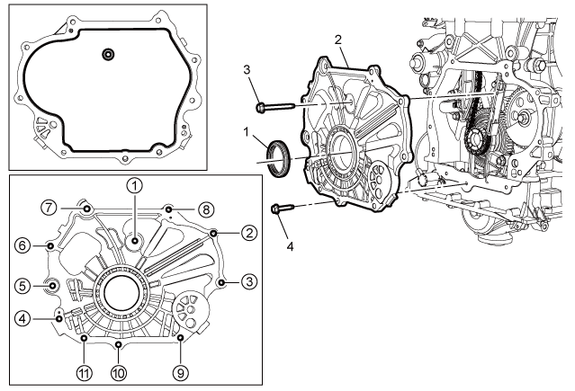

发动机前盖的更换（LI6）
安装程序
-

1.使用EN-52479曲轴前油封安装工具安装曲轴前油封(1)。
- 2.绕发动机前盖边和中间螺栓法兰面涂上约3 mm (0.12 in)厚的发动机前盖密封胶胶条。关于推荐的密封剂，请参见粘合剂、油液、润滑剂和密封胶。
- 3.确保室温硬化密封剂(RTV)的正确使用。室温硬化密封胶（RTV）和厌氧密封胶的使用。
注意:
- • 在涂胶之前，清洁缸体、上油底壳和发动机前盖的配合面，不可有污染物。
- • 在涂密封胶后的8分钟内，100%拧紧所用螺栓。
- • 在涂密封胶后的8分钟内无法100%拧紧所用螺栓，可先将所有螺栓预拧紧到1牛米以上，然后1小时内100%拧紧所用螺栓。
- 4.将前盖(2)安装到缸体上的定位销孔上。
-
5.发动机前盖螺栓-长(3)»安装并紧固10 N•m (89 lb in)
- 6.按图示顺序紧固发动机前盖螺栓-短。(4)[10x]
- 6.1 第一遍紧固至8 N•m (71 lb in)。
- 6.2 最后一遍紧固至10 N•m (89 lb in)。
- 7.传动皮带张紧器»安装–传动皮带张紧器的更换（LI6）、传动皮带张紧器的更换
- 8.曲轴扭转减振器»安装–曲轴扭转减振器的更换（LI6）、曲轴扭转减振器的更换
-
9.水泵进水管(3)»重新定位
- 10.水泵进水管固定螺栓(2)»安装并紧固[2x]9 N•m（80 lb in）
- 11.发动机支座托架»安装–发动机支座托架的更换
- 12.安装右侧前轮罩衬板。前轮罩衬板的更换－右侧
- 13.检查并纠正发动机机油油位。近似油液容量